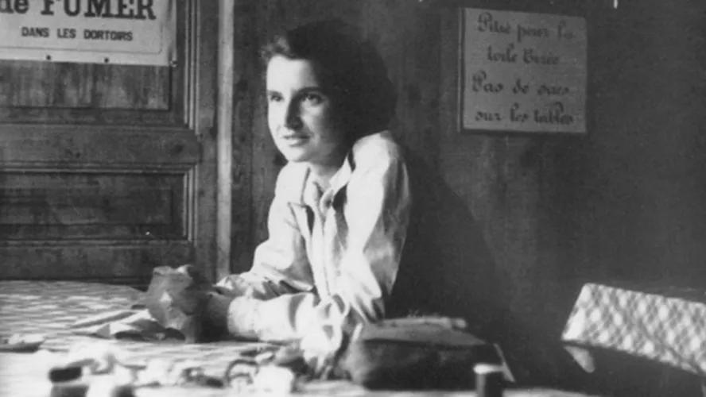

Rosalind Franklin

Seja bem-vindo ao projeto dedicado à vida e obra de uma das maiores cientistas da história. Aqui exploramos como Rosalind Franklin mudou o mundo através da química.

Seja bem-vindo ao projeto dedicado à vida e obra de uma das maiores cientistas da história. Aqui exploramos como Rosalind Franklin mudou o mundo através da química.